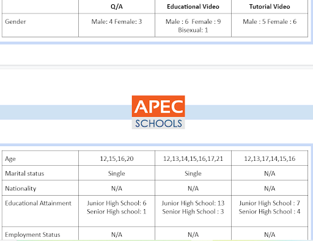
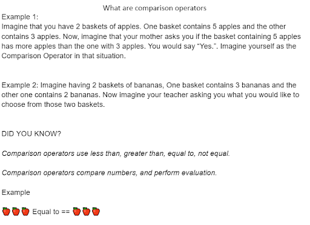
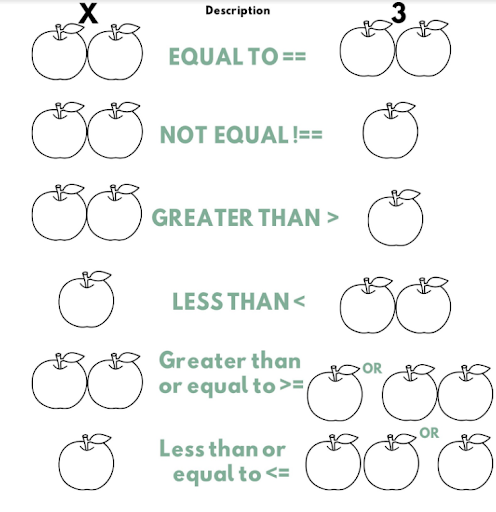
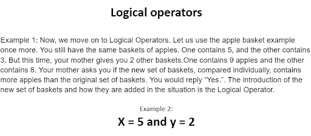
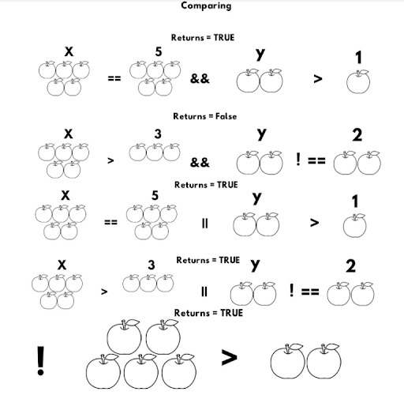
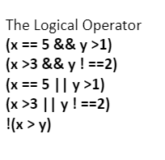

Who Watches These?
Viewers perspective
Now for us to be able to find out Who watches these? Our group did an audience analysis to our target audience. We also researched a few things to add to our content but for us to determine who, what and why these streams we did an analysis.We chose 3 Contents Q/A, Educational,Tutorial, Then we performed an analysis by using a survey and found out their demographic information

What are comparison operators?




